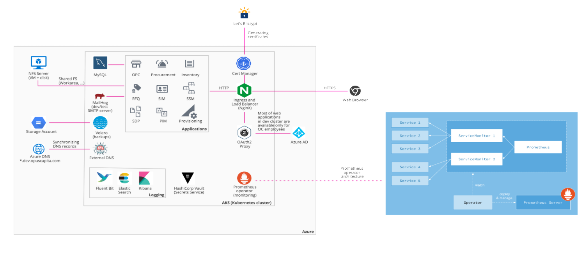
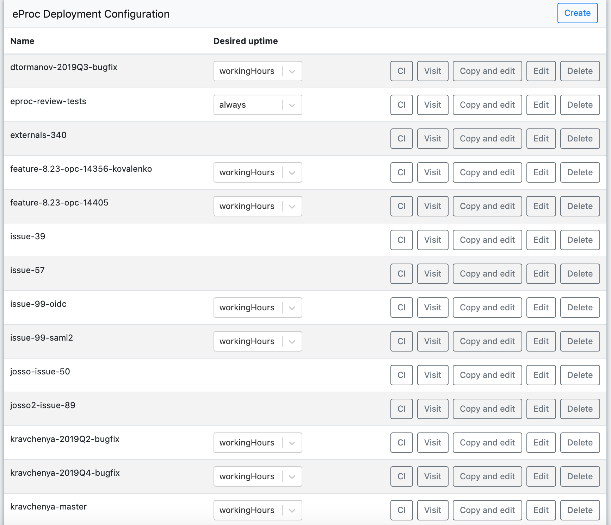

CI/CD pipeline for eProcurement applications
Speaker: Egor Stambakio
Big picture
Current state
Currently there're about 20 eProc installations in development cluster with different combinations of applications and their versions, e.g. GA/bugfix versions and current development versions for testing purpose.
(Almost) every installation can be created, updated and deleted by any developer - it doesn't require manual intervention.
Infractructure
- "Infrastructure as code" approach
- Github repository: OpusCapita/lunar-station
- Enables creating (possibly multiple copies of) entire infrastruction
- CI/CD/GitOps for infractructure just like for applications
In order to test new software or update some part of running stack there's no need to touch running cluster.
A new independent copy of cluster can be created in ~30 minutes, any operations can be done there without fear of breaking running installations, and after all it can be deleted and stop consuming money.
Technical details
- In order to create a cluster we need to create a branch on Github (and update configuration file if needed).
- When it's pushed CI process does the rest.
- Nothing stops developer from deleting or adding any parts of infrastructure on his custom branch.
eProc-line deployment
- "Configuration as code" approach
- Github repository: OpusCapita/eproc-line-deployment
- Applications are desribed as Kubernetes/Helm resources
- Deployment has dosens of configuration parameters with sane defaults
Technical details
- In order to create a new installation we need to create a branch on Github (and update configuration file if needed).
- When it's pushed CI process does the rest.
- Nothing stops developer from deleting or adding any parts of installation on his custom branch.
eProc-line launcher
- Convenient UI for managing installations of eProc-line deployment
- Motivation: keep it simple, easy for everyone
- Github repository: OpusCapita/eproc-line-launcher
- Allows to perform hassle-free Create, Read, Update, Delete operations on eProc-line deployment
- Also acts as a dashboard and provides a bird-eye view on what's going on with eProc deployments.
What it looks like
Technical details
- In order to create a new installation we need to create a branch on Github (and update configuration file if needed).
- When it's pushed CI process does the rest.
- Nothing stops developer from deleting or adding any parts of installation on his custom branch.
Any questions?
Thank you.
Speaker: Egor Stambakio

P. S. How you can find these slides
opuscapita.github.io/minsk-core-presentations